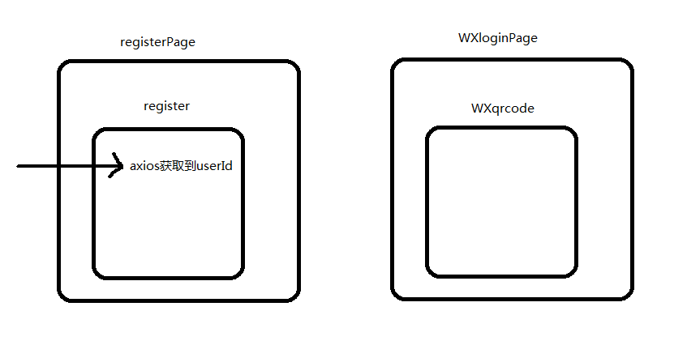

query传参
阅读量
query传参
背景
最近公司项目重构，没有太多的空余的时间来更博（好吧，我就是懒），然后我们今天来复盘一下我在上个星期遇到的一个问题：

阐述：
这是一个简单的扫码绑定微信功能，浏览者注册为网站用户后，服务器会传过来一个userid，通过这个userid，微信的接口会生成一个专有的二维码，用户扫码成功绑定微信后自动登录到网站
####问题
路由传参，register先传到父组件registerPage上，再传到WXloginPage上保留，再传到WXqrcode上？vuex？
解决办法
vue中有这样的一个方法：
当传递数组给 query 参数时，URL 语法不再是 /foo?users[]=Tom&users[]=Jerry，取而代之，新语法是 /foo?users=Tom&users=Jerry，此时 $route.query.users 将仍旧是一个数组，不过如果在该 query 中只有一个参数：/foo?users=Tom，当直接访问该路由时，vue-router 将无法知道我们期待的 users 是个数组。因此，可以考虑添加一个计算属性并且在每个使用 $route.query.users 的地方以该计算属性代替：
export default {
// ...
computed: {
// 此计算属性将始终是个数组
users () {
const users = this.$route.query.users
return Array.isArray(users) ? users : [users]
}
}
}
from:
My code
所以我的解决办法是：
在register.vue中
this.$router.push({ path: 'qrcode', query: { canSkip: true, id: res.data.id } })
在login.vue中
export default {
name: 'login',
components: {
loginPage, registerPage, qrcodePage, fillInfo, aberrantPage, forgetPage
},
data () {
return {
query: null,
canSkip: null,
id: null,
ignoreCode: false
}
},
mounted () {
this.query = this.$route.query
this.canSkip = this.query.canSkip
this.id = this.query.id
},
methods: {
ignore () {
this.$router.push('/login')
}
}
}
同样的，在qrcode中也能通过this.$route.query.id取到
注意
query要用path来引入，params要用name来引入，接收参数都是类似的，分别是this.$route.query.name和this.$route.params.name。
注意接收参数的时候，已经是$route而不是$router了哦！！
2018-11-01
打赏
秘小乐
2年前端开发经验，对前沿知识保持充分对的好奇。